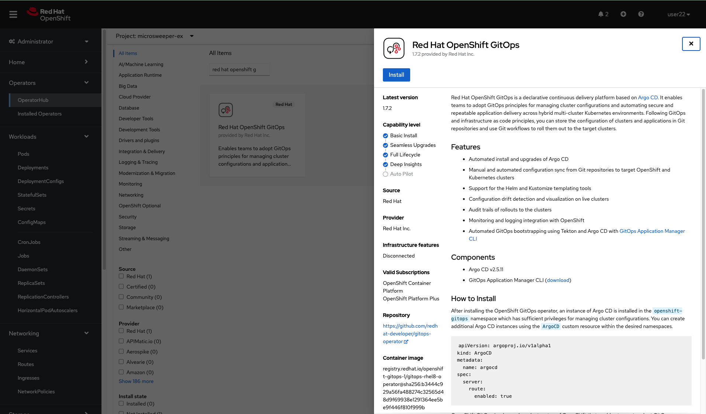
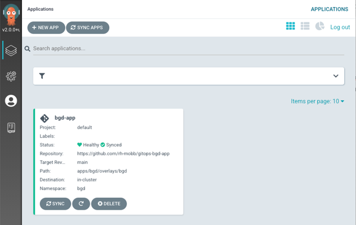
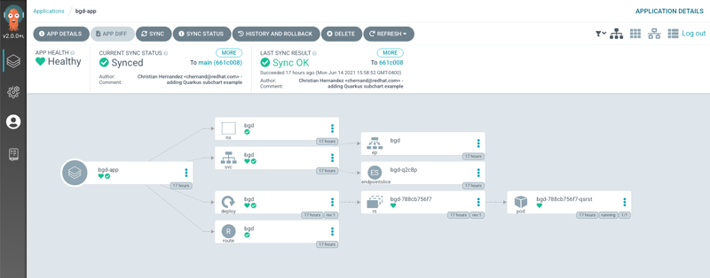
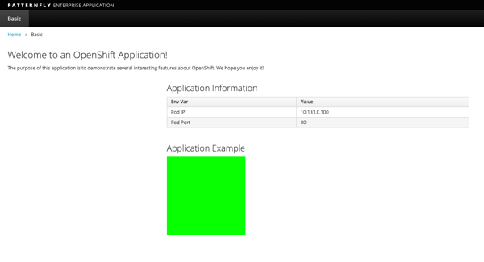
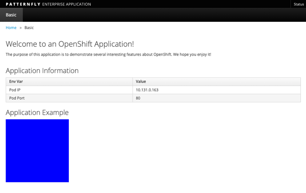
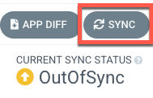

Deploying your Application with OpenShift GitOps#
- From the OpenShift Console Administrator view click through HOME -> Operators -> Operator Hub, search for "Red Hat OpenShift GitOps" and hit Install. Accept all defaults.

-
Create a new project
-
Deploy ArgoCD into your project
cat <<EOF | oc apply -f - apiVersion: argoproj.io/v1alpha1 kind: ArgoCD metadata: name: argocd spec: sso: dex: openShiftOAuth: true resources: limits: cpu: 500m memory: 256Mi requests: cpu: 250m memory: 128Mi provider: dex rbac: defaultPolicy: "role:readonly" policy: "g, system:authenticated, role:admin" scopes: "[groups]" server: insecure: true route: enabled: true tls: insecureEdgeTerminationPolicy: Redirect termination: edge EOF -
Wait for ArgoCD to be ready
-
Apply the gitops configuration
cat <<EOF | oc apply -f - apiVersion: argoproj.io/v1alpha1 kind: Application metadata: name: bgd-app namespace: bgd spec: destination: namespace: bgd server: https://kubernetes.default.svc project: default source: path: apps/bgd/base repoURL: https://github.com/rh-mobb/gitops-bgd-app targetRevision: main syncPolicy: automated: prune: true selfHeal: false syncOptions: - CreateNamespace=false EOF -
Find the URL for your Argo CD dashboard and log in using your OpenShift credentials

-
Click on the Application bgd-app to show its topology

-
Verify that OpenShift sees the Deployment as rolled out
-
Get the route and browse to it in your browser
-
You should see a green box in the website like so

-
Patch the OpenShift resource to force it to be out of sync with git
-
Refresh Your browser and you should see a blue box in the website like so

-
Meanwhile check ArgoCD it should show the application as out of sync. Click the Sync button to have it revert the change you made in OpenShift

-
Check again, you should see a green box in the website like so
-
Patch the ArgoCD application to automatically self Heal
-
Change the Application again and watch the ArgoCD web gui, you should see the change made in the cluster get quickly reverted back to match what is in git.
The self healing may happen so fast you don't even see it happen.